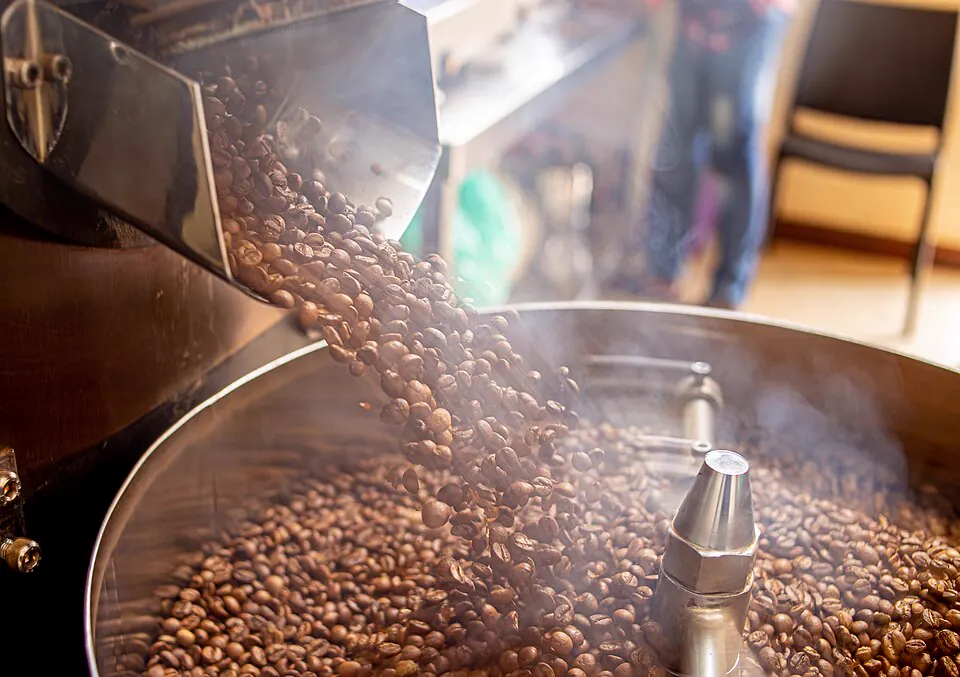
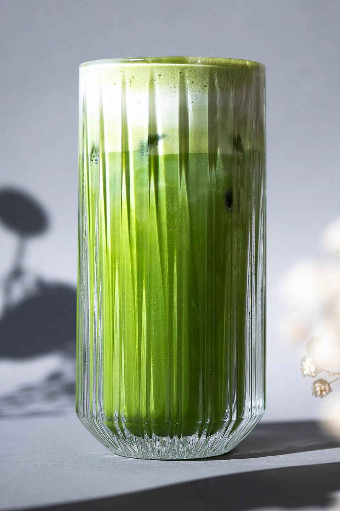
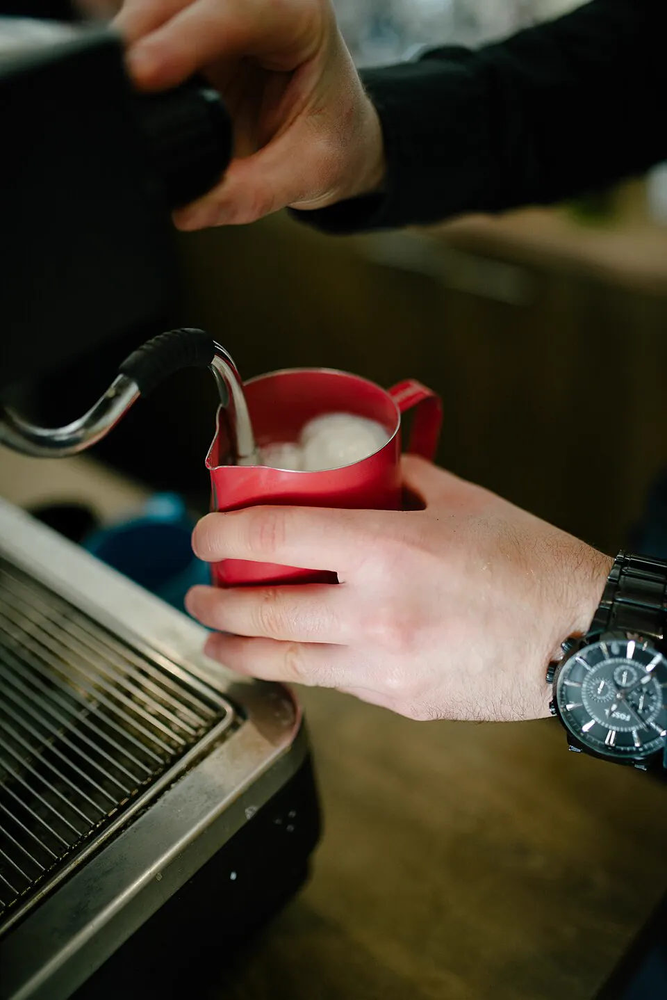
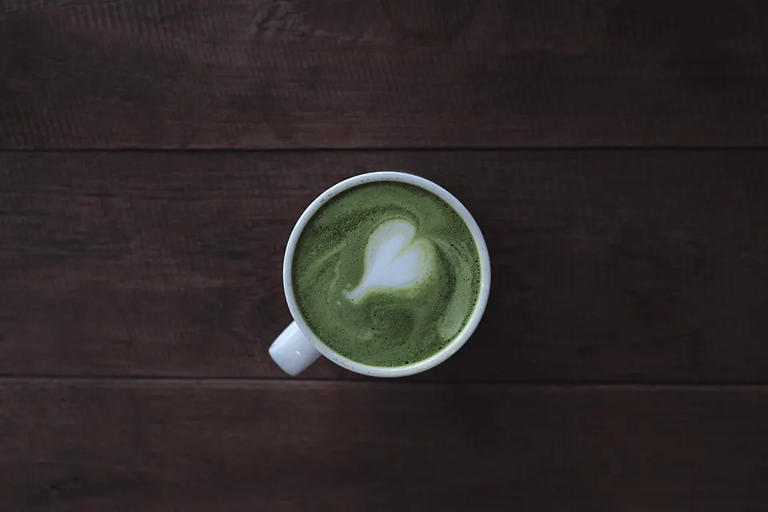
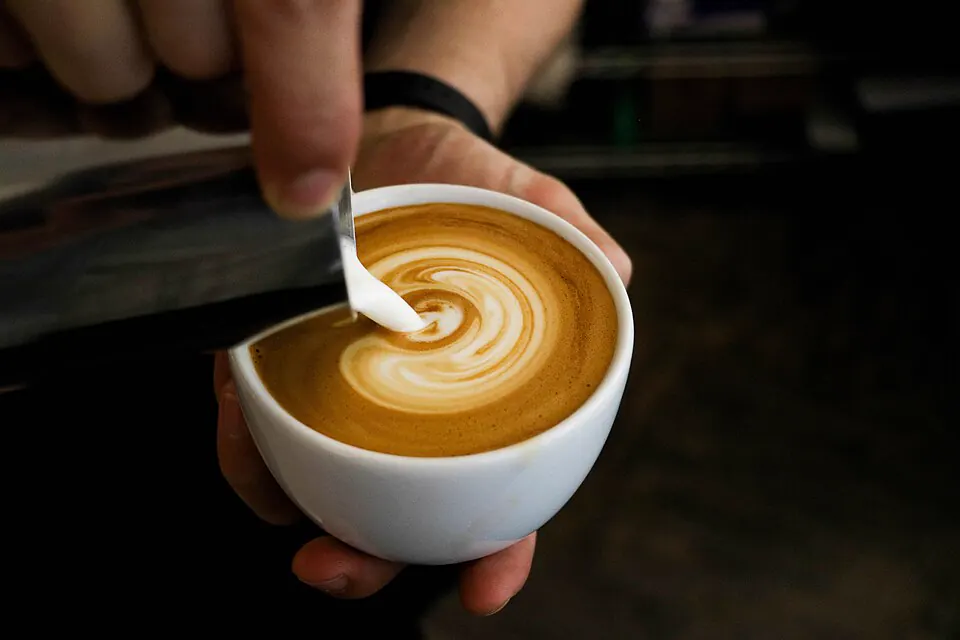
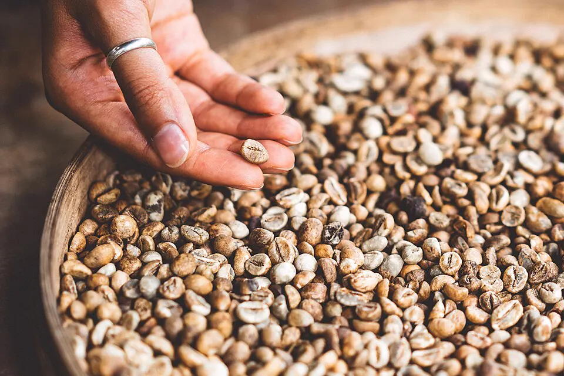
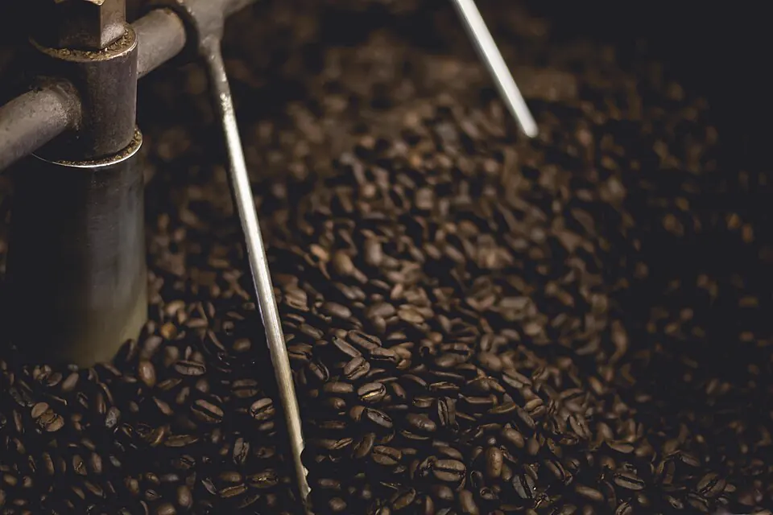
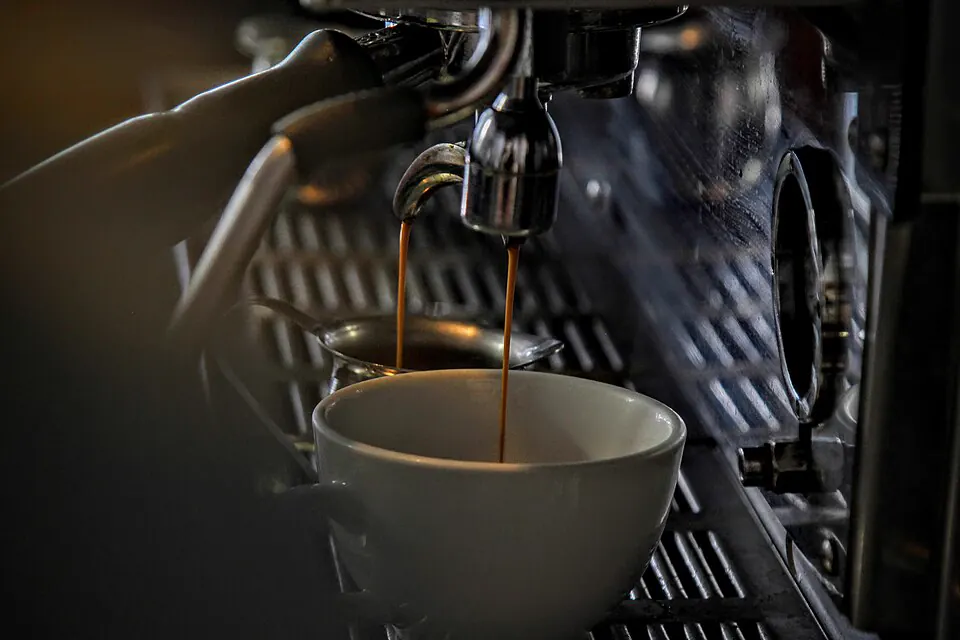
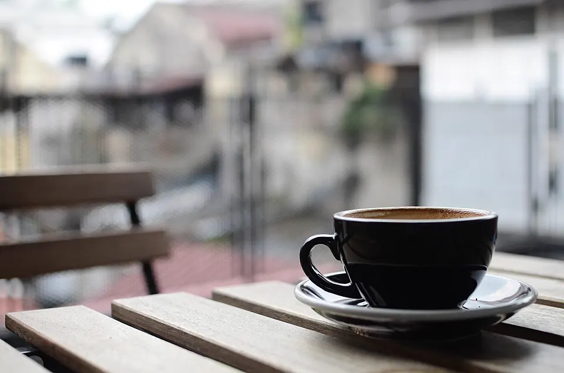

Tostamos los martes
Lotes de 5 kg en una tostadora chica, al fondo del local. El grano descansa una semana antes de llegar a la taza.

Tostamos el café en casa y batimos matcha de Uji a mano, en una esquina de Gorriti, Palermo. Abrimos todos los días desde las 7:30.
Ver la cartaPor qué Brote
Abrimos Brote para tomar el café que nos gustaba y no encontrábamos: tostado la semana pasada, molido en el momento y servido sin apuro. Después llegó el matcha, y se quedó.


Cuatro decisiones que tomamos el primer día y no pensamos cambiar.

Lotes de 5 kg en una tostadora chica, al fondo del local. El grano descansa una semana antes de llegar a la taza.

Nada de café molido esperando en una tolva. Cada espresso se pesa y se muele justo antes de pasar.

Viene de Uji, Japón, y lo batimos con chasen como corresponde. Sin azúcar agregada, salvo que la pidas.

Avena, almendras o coco, el mismo precio que la de vaca. Nos parece lo justo.
Cinco pasos, todos dentro del local. Seguí deslizando.

Compramos café verde a productores chicos de Etiopía, Colombia y Brasil, y lo separamos a mano.

Cada martes. Sacamos muestras del tambor cada minuto para cortar el tueste en el punto justo.

Siete días de reposo para que el grano suelte el gas. Apurarlo es lo único que no hacemos.

18 gramos, 36 de bebida, entre 27 y 30 segundos. Si no sale así, lo tiramos y empezamos de nuevo.

A la mesa, con un vaso de agua. Si querés saber qué estás tomando, preguntá: nos encanta contarlo.
Bolsas de 250 g, tostadas esta semana. Te lo molemos para tu cafetera o te lo llevás entero.
Guji · Lavado
Jazmín, durazno y té negro
$14.500
Huila · Lavado
Panela, naranja y cacao
$13.000
Cerrado · Natural
Avellana, chocolate con leche
$12.000
Para espresso
Colombia y Brasil, dulce y redondo
$12.500
